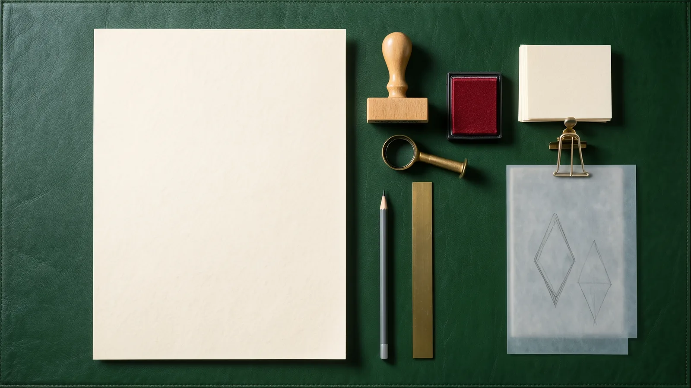
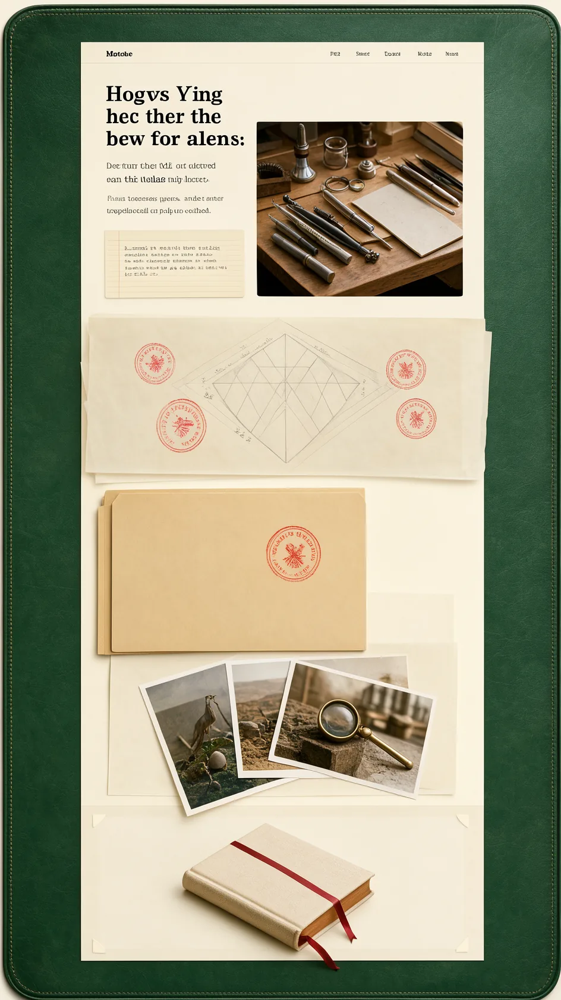

A · Paper Trail
The process as one sheet of paper crossing a studio desk: typed, clipped, traced over, stamped and finally bound into the book you are reading.

Gate 2
Newsreader for reading, at length.
Courier Prime · typed
Young Serif · Newsreader · Courier Prime (OFL)
Set piece: a pencil draws the double diamond on tracing paper as the sheet travels, and at each gate you press a real rubber stamp to approve or revise. At the end every page you scrolled past squares up and is bound into a book whose cover is this site.
Explains by: lifting the tracing paper to compare each brief with what came back.
“You stamp the four human decisions yourself with a rubber stamp, and when you reach the bottom every page you scrolled past gets bound into a book.”
Build: medium SVG and CSS scroll drawing, no canvas.